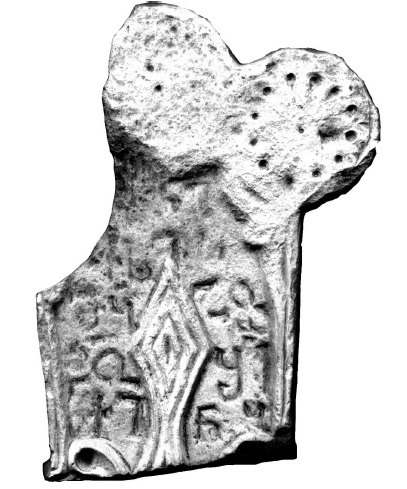

ხუნზახის VIII წარწერა დაღესტნიდან
შინაარსი / Summary
მოსახსენებელი
ბიბლიოგრაფია Bibliography
კრიტიკული გამოცემა Interpretive Edition
რი(ჯუა)
ქ(რისტე)სი ს
მ(ე)ყჰ(ე)ჭ
წ(მიდა)ო შ(ეიწყალ)ე
5ქინყ
დიპლომატიური გამოცემა Diplomatic Edition
ႰႨ
ႵႱႨ Ⴑ
ႫႷჀႽ
ႼႭ ႸႤ
5ႵႨႬႷ

ხუნზახის VIII წარწერა დაღესტნიდან
{'ka': 'ჯვარი ქრისტესი, მეყჰეჭ (ხუნძ.) წმიდაო, შეიწყალე ქინყ (ხუნძ.).'}
{'default': 'შაჰბან ჰაფიზოვის აზრით, ჰ, ყ, მ, ნ ასოების დაწერილობის მიხედვით წარწერა IX-X საუკუნეებით უნდა დათარიღდეს.\n ამ წარწერაში საყურადღებოა წმინდანის სახელი, რომელსაც, ალბათ, ადგილობრივი, ხუნძური წარმომავლობა აქვს.\n მიუხედავად იმისა, რომ ამ სახელიდან აქ ასახულია მხოლოდ თანხმოვნები: მ, ყ, ჰ, ჭ, შაჰბან ჰაფიზოვის ვარაუდით, იგი შეიძლება ამოვიკითხოთ როგორც მეყჰეჭ „უცდომელი, \n შეცდომის უქონელი“. აღსანიშნავია ჰ და ჭ ასოები, რომლებიც შედის ხუნძური სიტყვის ჰეჭო-ს „არ არის; არ იმყოფება; არ არსებობს“ შემადგენლობაში. \n იგივე ფუძე დაბოლოებად გამოიყენება ზოგ ანთროპონიმშიც: ჵელეჭ (Магомедов А. Чародинцы: прошлое, настоящее, будущее. Махачкала, 2000, 324)\n (მომდინარეობს ჵელ-ჰეჭ „შეუფერებელი, არასათანადო, ულამაზო“ ფორმისაგან.\n სახელი „მფარველია“, ანუ იცავს მის მატარებელს ბოროტი სულისაგან), ჵვეჭილავ (ГIабашилов ГI. Сугъулдерил калам. МахIачхъала, 2007, 14)\n (ჵეჲ-ჰეჭ + სუფიქსი ილავ „ვინც არ გაიზარდა“), ბოლჲოჭ (Хапизов Ш.М. Поселения Джарского общества \n (историко-географическое и этнографическое описание микрорегиона в Восточном Закавказье). Махачкала, 2011, 221).\n (ბოლ-ჰეჭ „თემის წევრი არ არის“ (იქვე, 222), ანუ „ხიზანი“). განსხვავებით აქ დასახელებულ ანთროპონიმთაგან წარწერაში \n წარმოდგენილ სახელს არ აკლია ჰ თანხმოვანი. უნიკალურია წარწერის მეორე ანთროპონიმიც, რომელიც, როგორც ჩანს, შეუკვეცელი სახითაა მოცემული: ქინყ. \n მისი ამოსავალი ჩანს სიტყვა გინყ „პურეულის თავთავის ფხა“ (Саидова П.С. Диалектологический словарь аварского языка. М., 2008, 211). \n ამ მხრივ საყურადღებოა იმგვარი ხუნძური მეტსახელები, რომლებიც პირსახელებად გადაიქცევიან ხოლმე.'}
<div type="edition" xml:lang="ka" ana="mtavruli" xml:space="preserve">
<ab>
<lb n="1"/><w lemma="ქრისტე"><expan><abbr>ქ</abbr><ex>რისტ</ex><abbr>ე</abbr></expan></w>
<w lemma="განსუენება"><expan><abbr>გა</abbr><ex>ნ</ex><abbr>ო</abbr><ex>ჳ</ex><abbr>ს</abbr><ex>უ</ex><abbr>ენე</abbr></expan></w>
<w lemma="სულ">სოჳ<lb n="2" break="no"/>ლსა</w>
<name nymRef="ვაჩა">ვაჩაჲს<lb n="3" break="no"/>ასა</name>
<name nymRef="გურა"><expan><abbr>გო</abbr><ex>ჳ</ex><abbr>რაჲ<lb n="4" break="no"/>სასა</abbr></expan></name>
<name nymRef="მირა"><expan><abbr>მ</abbr><ex>ი</ex><abbr>რა</abbr><ex>ჲ</ex><abbr>ს</abbr><ex>ა</ex><abbr>ს</abbr><ex>ა</ex></expan></name>
</ab>
</div>